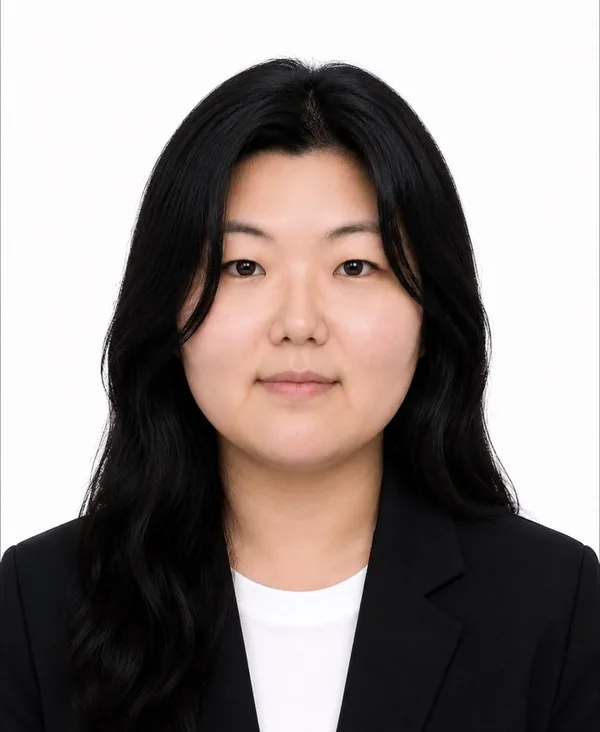

7만 건 → 3가지
데이터 인사이트
커뮤니티 게시글 7만 건에서 고객이 반복해 말하는 고민 3가지를 뽑고, 매달 GA4로 채널별 전환을 점검합니다
GA4 · Python · KoNLPy · SQL · ADsP

커뮤니티 데이터로 고객의 고민을 찾아 제안을 바꾸자 가입 파트너가 전월 대비 20배 이상 늘었습니다.
감이 아닌 데이터에서 출발하고, 반복 작업은 AI로 줄여 그 시간을 기획과 실험에 씁니다.
2023.07 – 2023.12
CP가맹정보팀 인턴
CP 등급평가 현장평가·보고서 작성, CP 포럼·시상식 운영 지원
2024.08 – 2025.02
독일 방문학생 · 경영학부
경영학부 한 학기 수학
2025.10 – 2026.07
마케팅 · 인턴에서 정규직 전환
나만의 행정사, 어드민 데스크 등 웹 서비스의 콘텐츠·그로스·퍼포먼스 마케팅 전담
2026.07 – 2027.06 예정
삼성 청년 SW·AI 아카데미 · Python 트랙
AI 서비스 개발 프로젝트 · LangGraph, Django, FastAPI 실습
강점
7만 건 → 3가지
커뮤니티 게시글 7만 건에서 고객이 반복해 말하는 고민 3가지를 뽑고, 매달 GA4로 채널별 전환을 점검합니다
GA4 · Python · KoNLPy · SQL · ADsP
100편+
독자에 따라 채널과 형식을 나눠 씁니다. 외국인 대상 체류 가이드 100편 이상으로 검색 유입을 쌓았습니다
블로그 · 카드뉴스 · 유튜브 · SEO · 고객 인터뷰
10편 / 하루
반복되는 제작은 AI 파이프라인으로 넘깁니다. 이용가이드 영상 10편을 하루 만에 완성했습니다
LangGraph · TTS · 멀티에이전트 · 바이브 코딩
네이버 블로그 일 평균 조회수 · 2026.05–10 · 출처 네이버 블로그 통계
광고비 없이, 검색 유입만으로 3개월 만에
일 평균 조회수 92 → 1,848
외국인이 실제로 검색하는 정착 키워드에 맞춰
체류 가이드 100편 이상을 쌓은 결과
지금까지의 프로젝트에서 배운 것을, 입사 후 일하는 방식으로 이어 가겠습니다.
감이 아니라 데이터와 커뮤니티에서 고객의 진짜 고민을 찾고, 그 고민을 메시지와 제안의 출발점으로 삼겠습니다. 고객이 직접 쓴 말에서 키워드를 뽑아 카피와 콘텐츠 주제를 정하겠습니다.
입사 후 이렇게 일하겠습니다
매달 성과를 숫자로 점검하고, 이상 지점까지 확인해 다음 액션을 정하겠습니다. 광고비 한 푼도 근거 없이 쓰지 않겠습니다.
입사 후 이렇게 일하겠습니다
반복되는 제작은 AI로 줄이고, 아낀 시간을 기획과 실험에 쓰겠습니다. 같은 기간에 더 많은 가설을 검증하겠습니다.
입사 후 이렇게 일하겠습니다
연락처
데이터로 고객을 읽고, AI로 더 빠르게 실험하는 마케터 강윤경입니다. 콘텐츠·그로스·데이터 분석이 만나는 자리에서, 첫 달부터 숫자로 기여하겠습니다.